Flow Models
Part A: exploring a large pretrained text-to-image flow model.
Part B: building and training my own
flow model on MNIST, from scratch.
Setup
For this project what was used was a pretrained text-to-image flow model, PixNerd-XXL-P16-T2I, which makes 512×512 images straight in pixel space.
A flow model moves an image along a path between pure noise and a clean image. I used the linear path, where
time t = 0 is pure noise ε and t = 1 is the clean image x₁:
\[x_t = (1-t)\,\epsilon + t\,x_1, \qquad \epsilon \sim \mathcal{N}(0, I)\]
Along this path the image changes at a constant speed, so the velocity is just x₁ − ε. Given a noisy
image, the time and a text prompt, the model predicts this velocity:
\[\hat v = v_\theta(x_t, t, c) \approx x_1 - \epsilon\]
Every image is center-cropped to a square, resized to 512×512, and scaled to RGB values in [−1, 1].
Part 1Visualizing Training and Sampling
1.1Constructing noisy training inputs
The first step is a function that places an image at any point on the path between noise and the clean image. It is simply a weighted mix of the two:
def interpolate(image, noise, t):
# x_t = (1 - t) * eps + t * x_1: t = 0 is pure noise, t = 1 is the clean image.
return (1 - t) * noise + t * imageI sampled one noise tensor and reused it at t = 0.25, 0.50 and 0.75, so the only thing that changes between the three images is how much noise is mixed in. I saved the image, the noise and the three noisy inputs so the next sections all work on exactly the same inputs.
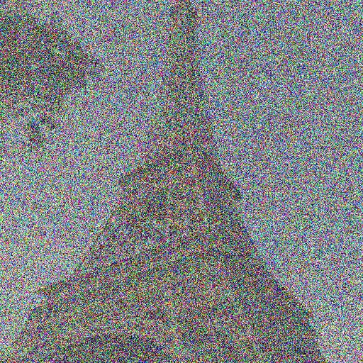

At t = 0.25 the image is mostly noise: I can only just make out the dark outline of the tower and the tree in the corner. At 0.50 the whole tower is clear but every surface is covered in coloured speckles, and at 0.75 it looks like a grainy photo where even the ironwork shows through.
1.2Classical denoising
As a baseline, I tried removing the noise with a Gaussian blur. The noisy image only contains
t·x₁ of the clean image, so I divided by t first to bring the brightness back to the right
level, then blurred:
candidates = {s: gaussian_blur(x / t, [int(6*s + 1)] * 2, [s, s]) for s in [1., 2., 4., 8., 16.]}
sigma = min(candidates, key=lambda s: ((candidates[s] - image) ** 2).mean().item())For each noise level I tried σ = 1, 2, 4, 8 and 16, and kept the one closest to the original image (lowest mean squared error).

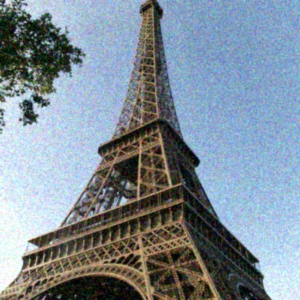
The best σ goes down as the image gets cleaner: σ = 8 at t = 0.25, 2 at 0.50 and 1 at 0.75. At t = 0.25 the blur that removes enough noise also removes the whole lattice, leaving a soft brown shape, and even at 0.75 the best blur still leaves coloured blotches in the sky. A blur can only trade noise for detail; it has no idea what a tower should look like.
1.3One-step denoising
Next, I used the model. Since the velocity points from the noise to the clean image, I can jump straight to
t = 1 by following it for the remaining time 1 − t:
\[\hat x_1 = x_t + (1-t)\,v_\theta(x_t, t, c)\]
def one_step_denoise(x, t, condition, predict_velocity):
return x + (1 - t) * predict_velocity(x, t, condition)I used the prompt "a high quality photo" and exactly one model call for each noisy input.
t = 0.25
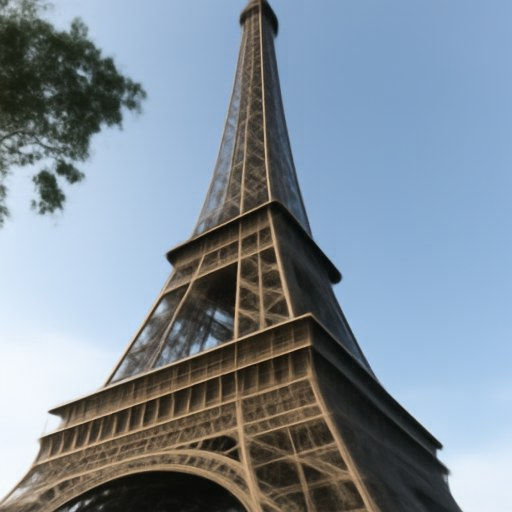
t = 0.50
t = 0.75
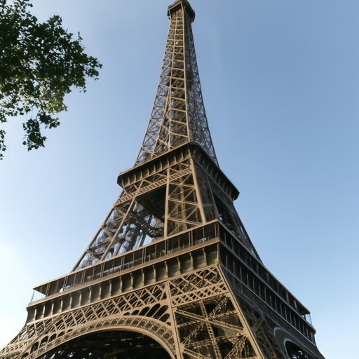
The one-step estimate is far better than any blur. At t = 0.75 it is almost identical to my photo, with the ironwork and leaves intact. At t = 0.25 it still gets the shape, colours and sky right, but the lattice and the tree are soft and smeared. With that much noise, one call can only guess the average of all the towers that could be hiding underneath, and an average of many slightly different lattices is a blur.
1.4Visualizing velocity
In 1.3 I added (1 − t)·v̂ to the noisy image. Here I looked at that update itself and compared it with
the update that would recover my exact photo. Because I saved the noise, I know the true velocity
vgt = x₁ − ε, so the true update is (1 − t)·vgt = x₁ − xt.
For the error map I took the RMS over the three colour channels at each pixel:
\[E_t = \sqrt{\operatorname{mean}_{\text{RGB}}\Big(\big[(1-t)(\hat v_t - v_{\text{gt}})\big]^2\Big)}\]
@torch.inference_mode()
def velocity_diagnostics(x_t, t, clean_image, epsilon, condition, predict_velocity):
predicted_update = (1 - t) * predict_velocity(x_t, t, condition)
# v_gt = x_1 - eps, so (1 - t) * v_gt = x_1 - x_t.
ground_truth_update = (1 - t) * (clean_image - epsilon)
# RMS over the RGB axis only, so each pixel keeps its own error.
error_map = ((predicted_update - ground_truth_update) ** 2).mean(dim=1).sqrt()
return predicted_update, ground_truth_update, error_mapBoth updates use the same symmetric colour scale with zero at mid-grey, and the error maps share the same
vmin/vmax at all three times, so the figures can be compared directly.
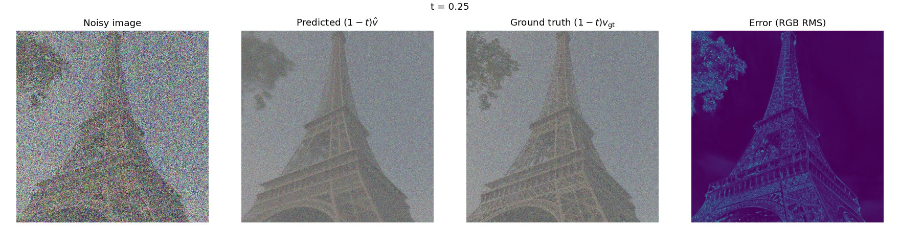
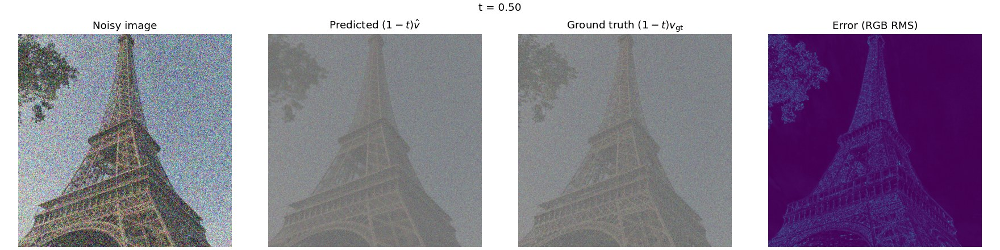
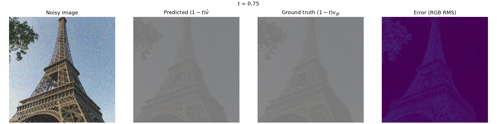
The predicted update looks almost exactly like the ground truth: a faint grey copy of the tower with the noise mixed in, i.e. "remove this noise and add this structure". The error map is dark over the flat sky and lights up on the fine ironwork, the edges of the tower and the leaves, the parts with the most detail to guess. It is much brighter at t = 0.25 than at 0.75, because (1 − t) is bigger and the model has more of the image left to work out.
1.5Iterative denoising with Euler sampling
Instead of one big jump, I can take many small steps and ask the model for a new velocity at every step. This is Euler's method:
\[x_{t+h} = x_t + h\,v_\theta(x_t, t, c)\]
I used h = 0.02. If the last step would go past t = 1, I make it shorter so it lands
exactly on 1:
@torch.inference_mode()
def euler_sample(x_start, t_start, step_size, velocity):
n_steps = max(1, math.ceil((1 - t_start) / step_size - 1e-6))
x, t = x_start, float(t_start)
states = [(t, x)]
for k in range(1, n_steps + 1):
# Every step is step_size long except the last, which lands exactly on 1.
t_next = 1.0 if k == n_steps else t_start + k * step_size
x = x + (t_next - t) * velocity(x, t)
t = t_next
if k % 5 == 0 or k == n_steps:
states.append((t, x))
return x, statesI compute each time as t_start + k·h instead of adding h over and over, so rounding
errors don't build up. The small tolerance stops a value like 25.000000001 from turning into an extra 26th
step. I checked this with a constant velocity: starting from 0, 0.5 and 0.93 takes exactly 50, 25 and 4 steps.
Starting from the t = 0.50 input, this takes 25 steps. These are the start, every fifth step, and the end:
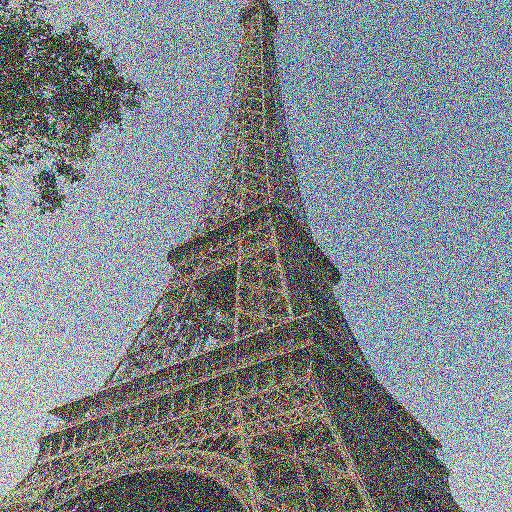
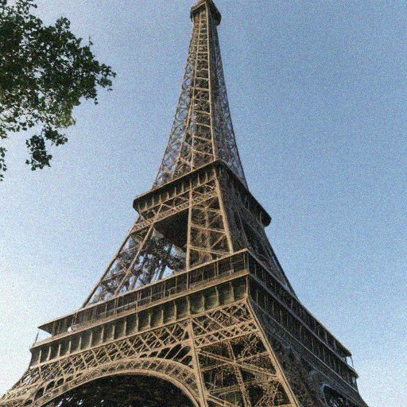
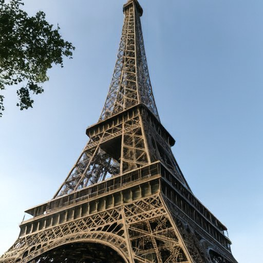
Comparing the three methods (all from t = 0.50)
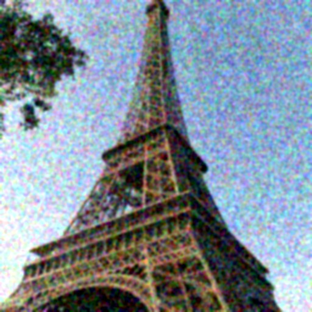


| method | model calls | MSE to my photo |
|---|---|---|
| Gaussian blur | 0 | 0.0489 |
| one step | 1 | 0.0165 |
| Euler | 25 | 0.0198 |
Euler gives the most convincing photo: the sky is smooth and the ironwork is sharp. Its MSE (0.0198) is still slightly higher than the one-step estimate's (0.0165), because over 25 steps it commits to its own fine detail, which looks real but isn't pixel-for-pixel the detail in my photo. MSE rewards safe, averaged guesses. The blur is clearly worst (0.0489), since it keeps a lot of the noise and loses the lattice.
1.6Generating images from noise
If I start the sampler at t = 0 from pure noise, it has to create an image from nothing. I ran 50 Euler
steps with "a high quality photo" from five different random noises (seeds 180–184).
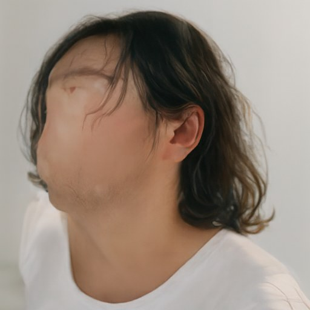
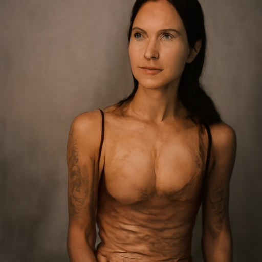
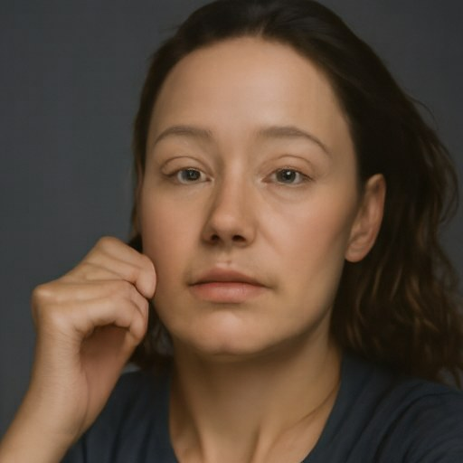
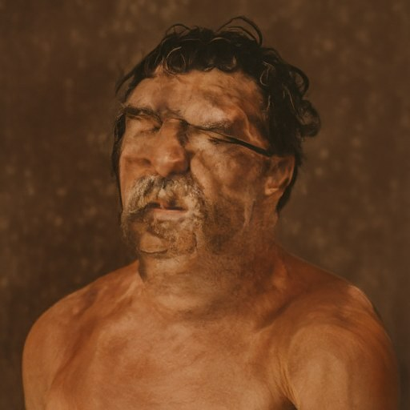
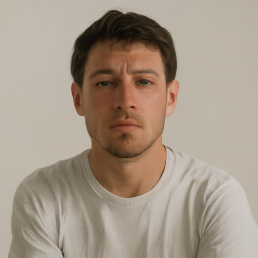
Surprisingly, all five seeds gave a portrait of a person, even though the prompt never mentions people. "A high quality photo" seems to pull the model towards the kind of photo it saw most often. Each seed gives a different face and background, but the faces without guidance are often broken: seed 180 has no face at all and seed 183 is melted. Only seeds 182 and 184 look like believable photos.
Part 2Conditional Generation and Guidance
2.1Classifier-free guidance
To make the prompt matter more, I used classifier-free guidance (CFG). At every step I ask the model for two
velocities: one with the prompt (vc) and one with an empty prompt
(vu). The difference between them is "what the prompt adds", and CFG pushes further in that
direction:
\[v_{\text{cfg}} = v_c + w\,(v_c - v_u)\]
def cfg_velocity(x, t, condition, w, predict_velocity, null_condition=''):
if isinstance(null_condition, str):
null_condition = model.encode(null_condition)
v_c = predict_velocity(x, t, condition)
if w == 0:
# w = 0 is plain conditional prediction, so skip the unconditional pass.
return v_c
v_u = predict_velocity(x, t, null_condition)
return v_c + w * (v_c - v_u)With w = 0 this is exactly the normal conditional prediction from 1.6 (I checked that the two are
identical). Below are the five samples with w = 7, using the same five starting noises as 1.6, so
each column starts from the same noise.
without guidance (1.6)
CFG, w = 7
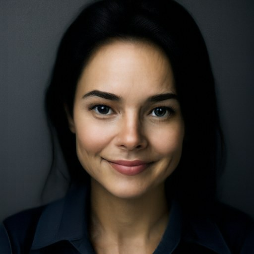
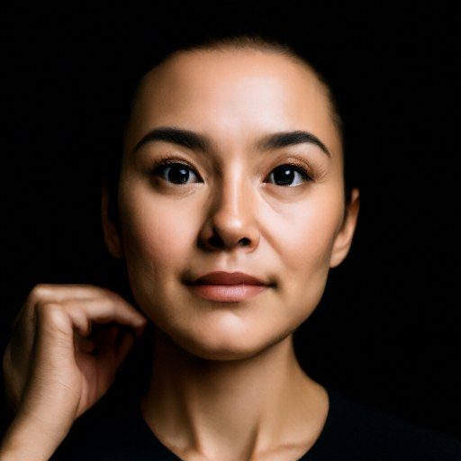
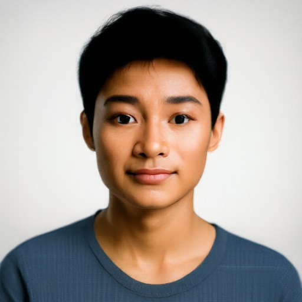
With w = 7 every sample is a clean, sharp studio portrait with a clear face, good lighting and no melted features. Each seed keeps the rough layout of its unguided version (seed 182 even keeps the hand by the face), so guidance mostly cleans up the result rather than replacing it. The trade-off is that the five images look much more alike: all centred head-and-shoulders shots on a plain background, with stronger contrast and saturation.
Part 3Creative Applications
For all of Part 3 I used Euler steps of h = 0.02, CFG with w = 7, and the empty prompt
for the unconditional branch.
3.1Image-to-image editing
This is the SDEdit idea: add some noise to a real image, then let the model denoise it. I noise the image to a
starting time tstart and run the Euler sampler with CFG from there to 1:
def edit(image, noise, t_start, condition, predict_velocity, w=7, step_size=0.02):
x_start = interpolate(image, noise, t_start)
velocity = lambda x, t: cfg_velocity(x, t, condition, w, predict_velocity, null_condition)
result, _ = euler_sample(x_start, t_start, step_size, velocity)
return resultA small tstart means the image is almost all noise, so the model has a lot of freedom and
invents a new image. A larger tstart keeps more of the original. I used the prompt
"a high quality photo" and the starting times 0.02, 0.04, 0.06, 0.10, 0.14, 0.25 and
0.50.
The Campanile
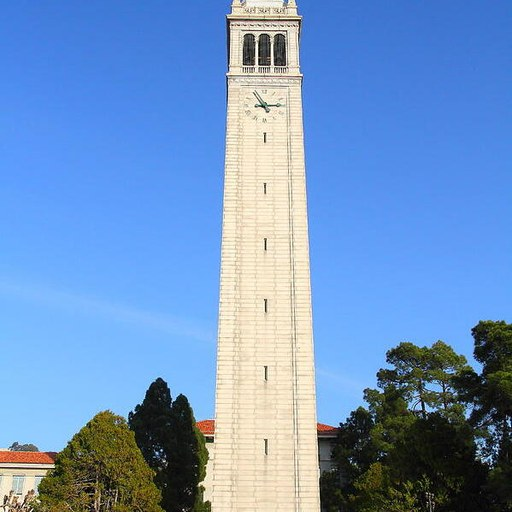
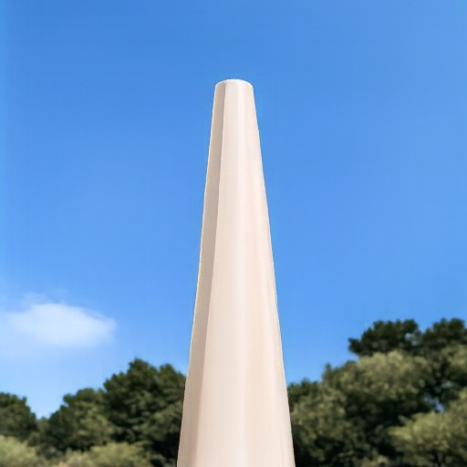
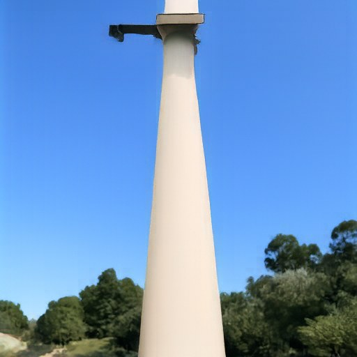
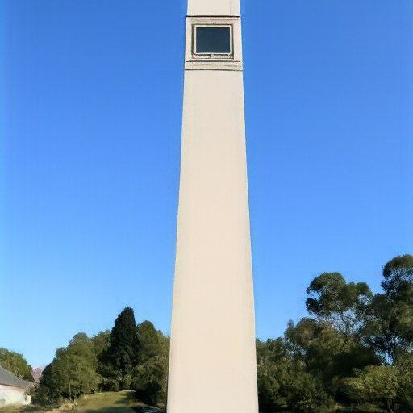
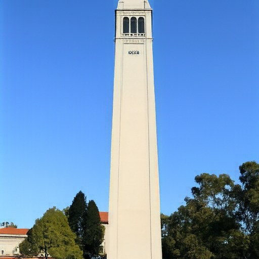
Starting at 0.02 the model keeps only the blue sky and a white shape, so the tower becomes a plain white pillar. By 0.10–0.14 it is a tall, tapering stone tower with a window near the top, at 0.25 the arched windows at the top are back, and 0.50 is nearly a copy.
Eiffel Tower

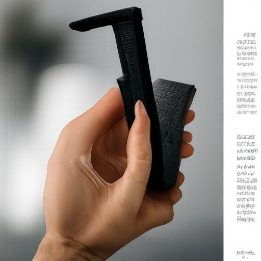
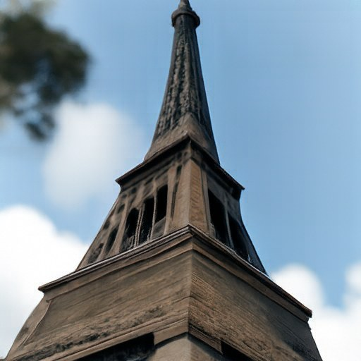
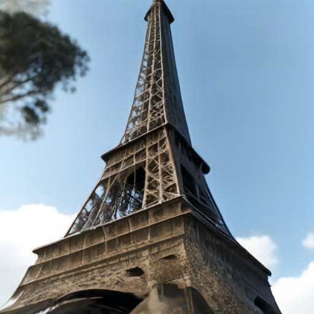
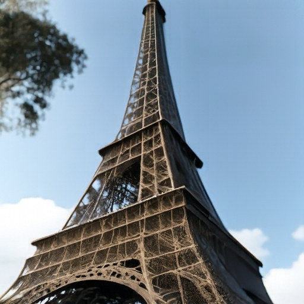
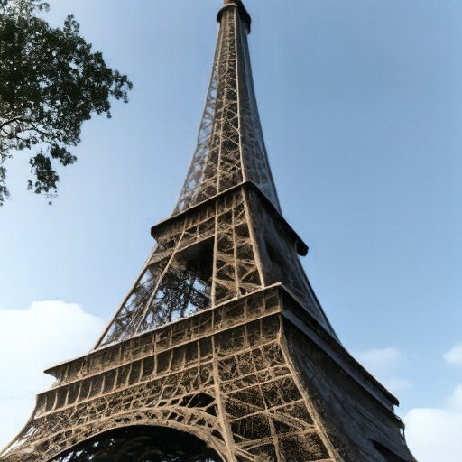
At 0.02 the model keeps only the rough colours and invents something new: a hand holding a black object. At 0.04–0.06 it becomes a dark wooden tower, by 0.10–0.14 the lattice tower appears, and from 0.25 it clearly matches the original.
Sacré-Cœur
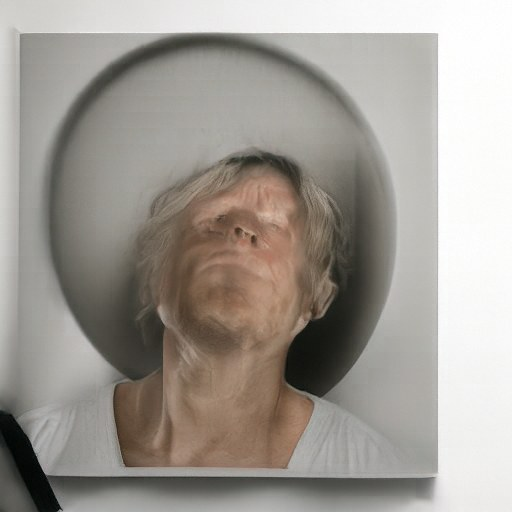
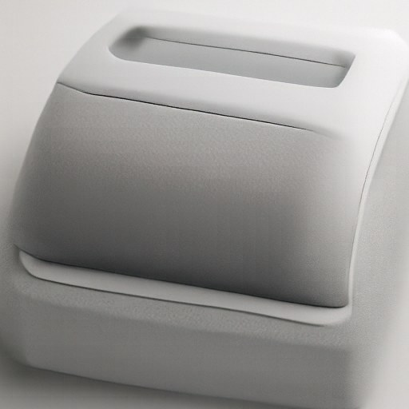
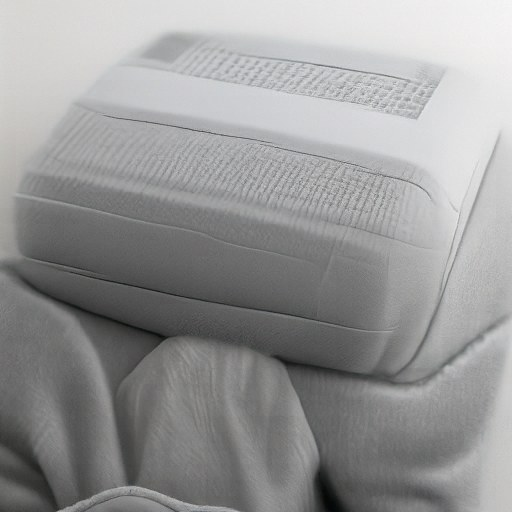
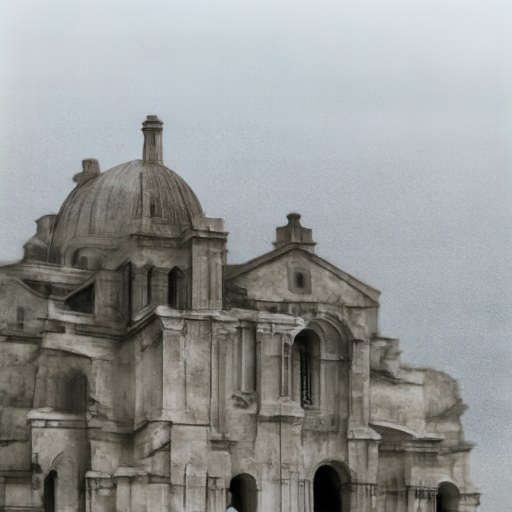
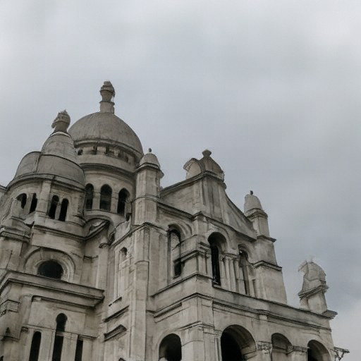
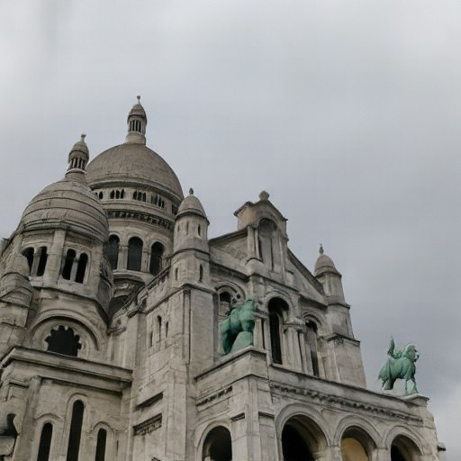
At 0.02 it turns into a blurred face, then a grey cushion-like object at 0.04–0.06 and a rocky cliff at 0.10. A domed building appears at 0.14, and from 0.25 it matches the original.
A web image and my own drawings
The same procedure works on things that aren't photos. Here the model has to turn a flat drawing into "a high quality photo", which makes it easy to see what it invents.
macaw (from the web)
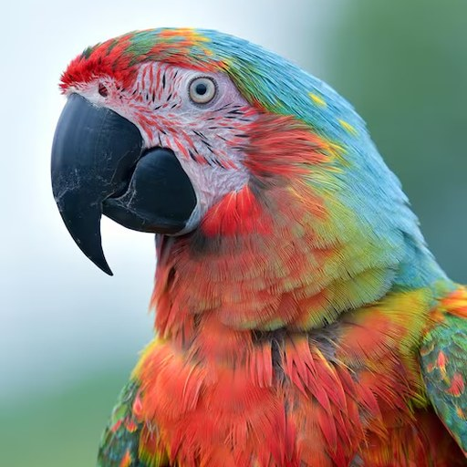
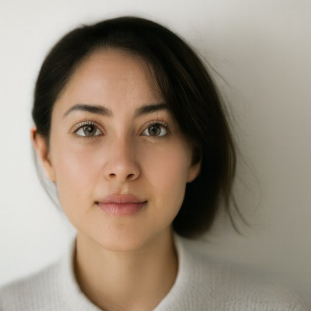
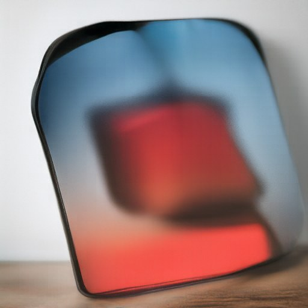
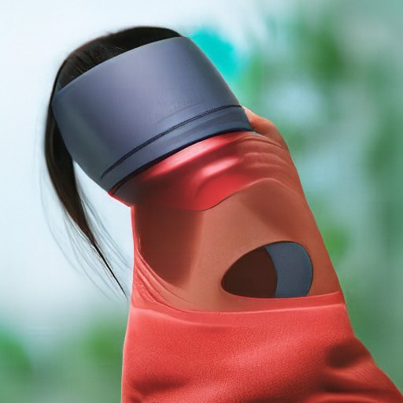
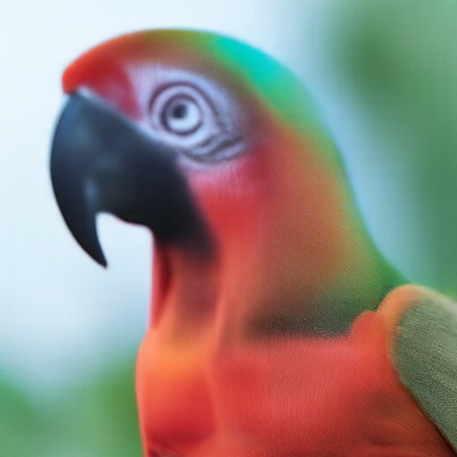
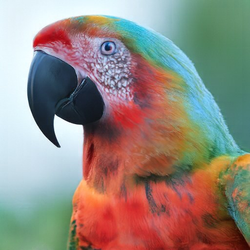
At 0.02 the macaw becomes a woman's portrait, then a pair of red and blue objects at 0.04–0.06. By 0.10 it is clearly a parrot again, though blurry, and 0.25–0.50 match the original.
my drawing of Gojo Satoru
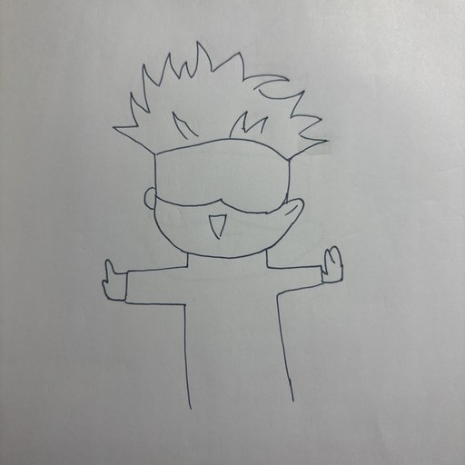
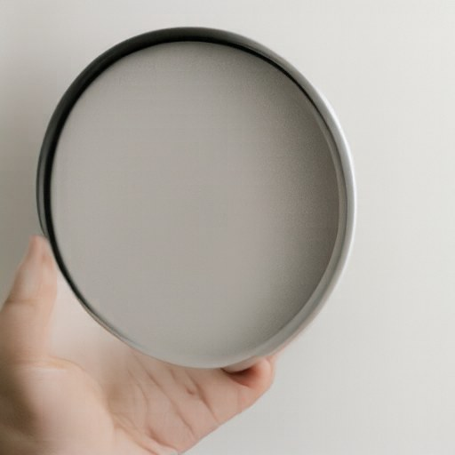
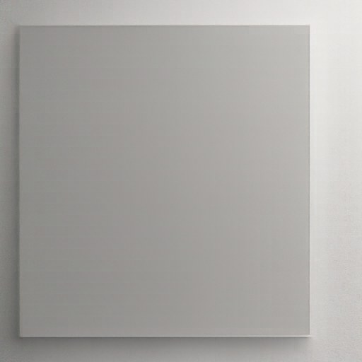
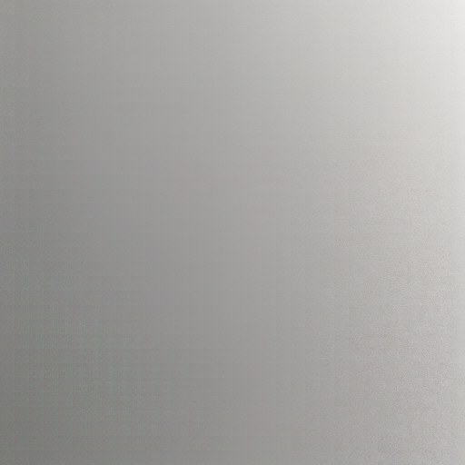
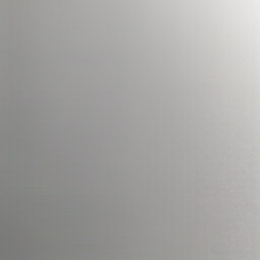
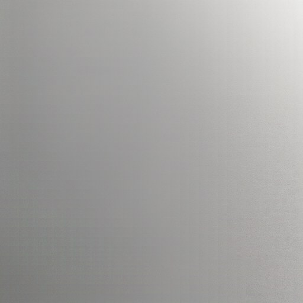
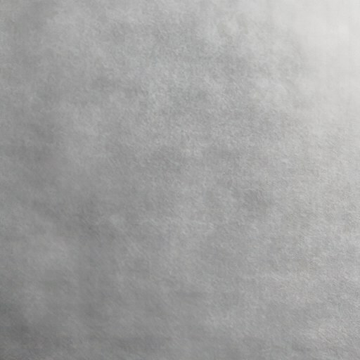
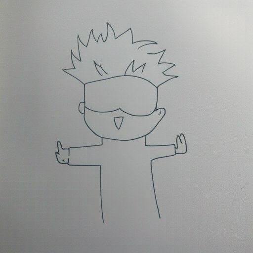
Because my drawings are thin pencil lines on a big white page, at low t the model mostly sees "grey paper". Gojo turns into a hand holding a round tray at 0.02, then a blank square of paper, and from 0.06 to 0.25 just empty paper; he only comes back, almost unchanged, at 0.50.
my drawing of Anya Forger
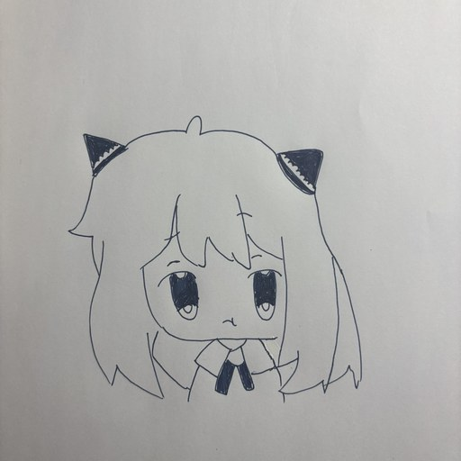
Anya is more fun: she becomes a white plate, then at 0.10–0.14 her black cat-ear hair clips turn into little metal pieces and holes poked in the paper, and at 0.25 a rough sketch of a cat-eared head appears before the full drawing at 0.50. The dark, solid clips are the only parts strong enough to survive the noise.
3.2Text-guided editing
Here I ran the same sweep, but swapped the generic prompt for one describing the edit I wanted. Now a small
tstart gives an image that follows my prompt, and a larger one keeps more of the original
shape, so somewhere in the middle the image becomes a mix of both.
The Campanile → "a photograph of a rocket on a launch pad"
Starting between 0.06 and 0.14 works best: a white rocket in the tower's exact position, with a launch gantry where the trees were.
Eiffel Tower → "a photograph of a lighthouse on a rocky coast at sunset"
Starting between 0.10 and 0.14 works best: a lighthouse shaped like the tower's legs, with the same tree in the corner.
Sacré-Cœur → "a photograph of a snowy castle in winter"
Starting between 0.10 and 0.14 gives a snowy castle with the same grey sky and framing, and at 0.25 the dome itself gets snow and red roofs. For all three, starting earlier than this ignores my photo, and starting after 0.25 ignores the prompt.
3.3Visual anagrams
A visual anagram is an image that shows one thing upright and something else when turned upside down. At every
Euler step I compute two CFG velocities: one for prompt a on the image as it is, and one for prompt
b on the image rotated 180°. I rotate the second one back and average the two:
\[v = \tfrac{1}{2}\Big(v_{\text{cfg}}(x, t, c_a) + F\big(v_{\text{cfg}}(F(x), t, c_b)\big)\Big)\]
where F rotates by 180° (it flips both the rows and the columns, not just a vertical mirror). Since the
final image has to satisfy both velocities at once, it looks like prompt a one way up and prompt
b the other way up.
def visual_anagrams(noise, condition_a, condition_b, predict_velocity, w=7, step_size=0.02):
def velocity(x, t):
# Upright view follows prompt a; the rotated view follows prompt b.
v_a = cfg_velocity(x, t, condition_a, w, predict_velocity, null_condition)
v_b = rotate180(cfg_velocity(rotate180(x), t, condition_b, w, predict_velocity, null_condition))
return (v_a + v_b) / 2
result, _ = euler_sample(noise, 0, step_size, velocity)
return resultBoth illusions work. Upright, the first is a small island with a castle floating above the clouds; flipped, the island's rocky underside becomes the cat's striped face and its two hanging rocks become the ears, with the clouds as the cat's white body. The stained glass one works even better: the balloon's basket and ropes turn into the owl's eyes and beak, and the balloon itself becomes its round body. Stained glass helps a lot, because the thick black lead lines hide the places where the two pictures don't quite line up. I ran two seeds for each pair and kept the better one.
3.4Hybrid images
This is the same idea as the hybrid images in Project 2, but done during generation. Up close we see the high
frequencies, and from far away only the low frequencies. At every step I take the low-pass part of the
velocity for prompt a and the high-pass part for prompt b:
\[v = \operatorname{lowpass}(v_a) + \big(v_b - \operatorname{lowpass}(v_b)\big)\]
The low-pass filter is a Gaussian blur with σ = 16 (kernel size 265 at 512×512).
def make_hybrids(noise, condition_a, condition_b, predict_velocity, w=7, step_size=0.02):
def velocity(x, t):
# Low frequencies from prompt a (seen from far), high frequencies from prompt b (up close).
v_a = cfg_velocity(x, t, condition_a, w, predict_velocity, null_condition)
v_b = cfg_velocity(x, t, condition_b, w, predict_velocity, null_condition)
return lowpass(v_a) + v_b - lowpass(v_b)
result, _ = euler_sample(noise, 0, step_size, velocity)
return resultEach result is shown at full size (close up) and at 64×64 (as if seen from far away).
Up close both prompts come through clearly: a koi pond with lotus flowers in an ukiyo-e style, and an ink drawing of cherry trees. From far away the effect is much weaker than in the anagrams. In the first one, the pale dome rising above the pond gives the rounded outline of a mountain, but it doesn't look much like Fuji. In the second, the two trunks and the arch of blossoms frame an empty oval, like hair around a face, but no features appear. The low frequencies only control the rough layout, and the close-up prompts were happy to fill that layout with sky or blank paper. Compared with making hybrids by hand in Project 2, I didn't need to align two photos or tune any cutoffs, but I had less control over how strongly the far-away image shows.
Setup
In Part A the model was already trained. In Part B I built and trained my own models on MNIST, the dataset of 28×28 handwritten digits, with pixel values in [0, 1]. First I trained a UNet that removes noise in one step. Then I turned it into a flow-matching model that generates digits from pure noise, the same way the big model in Part A does.
Every model below is trained on the 60,000 training images, and every test figure uses the same first ten test digits (7 2 1 0 4 1 4 9 5 9) so the figures can be compared directly.
Part 1Training a Single-Step Denoising UNet
1.1Implementing the UNet
A UNet first shrinks the image step by step to understand its overall shape, then grows it back to full size. Along the way, skip connections copy the features from each level of the shrinking half straight across to the growing half, so fine details like stroke edges aren't lost at the bottom.
All the building blocks are a convolution followed by BatchNorm and GELU:
| block | layer | what it does |
|---|---|---|
Conv | Conv2d(3, stride 1, pad 1) | changes channels, same size |
DownConv | Conv2d(3, stride 2, pad 1) | halves the size: 28 → 14 → 7 |
UpConv | ConvTranspose2d(4, stride 2, pad 1) | doubles the size: 7 → 14 → 28 |
Flatten | AvgPool2d(7) | 7×7 → 1×1 |
Unflatten | ConvTranspose2d(7, stride 7) | 1×1 → 7×7 |
ConvBlock | Conv → Conv | a deeper "Conv" |
DownBlock / UpBlock | DownConv / UpConv → ConvBlock | resize, then refine |
With D hidden channels, the image goes
1×28×28 → D×28×28 → D×14×14 → 2D×7×7 → 2D×1×1 and back up. At each level the decoder's features are concatenated
with the encoder's (doubling the channels), and a final 3×3 convolution maps back to one channel.
Code: the UNet
class UnconditionalUNet(nn.Module):
def __init__(self, in_channels, num_hiddens):
super().__init__()
D = num_hiddens
self.in_block = ConvBlock(in_channels, D) # D x 28 x 28
self.down1 = DownBlock(D, D) # D x 14 x 14
self.down2 = DownBlock(D, 2 * D) # 2D x 7 x 7
self.flatten = Flatten() # 2D x 1 x 1
self.unflatten = Unflatten(2 * D) # 2D x 7 x 7
self.up1 = UpBlock(4 * D, D) # concat(2D, 2D) -> D x 14 x 14
self.up2 = UpBlock(2 * D, D) # concat(D, D) -> D x 28 x 28
self.out_block = ConvBlock(2 * D, D) # concat(D, D) -> D x 28 x 28
self.head = nn.Conv2d(D, in_channels, 3, 1, 1)
def forward(self, x):
x0 = self.in_block(x)
x1 = self.down1(x0)
x2 = self.down2(x1)
h = self.unflatten(self.flatten(x2))
# skip connections: concatenate the matching encoder features along channels
h = self.up1(torch.cat([x2, h], dim=1))
h = self.up2(torch.cat([x1, h], dim=1))
h = self.out_block(torch.cat([x0, h], dim=1))
return self.head(h)1.2Using the UNet to train a denoiser
The denoiser gets a noisy digit z and has to output the clean digit x. The noise is
Gaussian with strength σ, and the loss is the mean squared error:
\[z = x + \sigma\epsilon, \quad \epsilon \sim \mathcal{N}(0, I) \qquad\qquad L = \mathbb{E}\,\lVert D_\theta(z) - x\rVert^2\]
This is what that noise looks like for σ = 0, 0.2, 0.4, 0.5, 0.6, 0.8 and 1.0 (one row each):
The digits are easy to read up to σ = 0.5, still guessable at 0.6, and by 0.8–1.0 most of them disappear into the noise.
1.2.1Training
I trained with σ = 0.5, D = 128, batch size 256 and Adam with a learning rate of 1e-4 for 5 epochs.
The noise is drawn fresh every time a batch is loaded, so the model never sees the same noisy image twice and
can't just memorise them.
Test digits after the first and the last epoch (rows: clean, noisy input, denoised output):
After one epoch the denoiser already recovers every digit, but the strokes are a bit fuzzy and there are faint grey specks in the background (look at the 1 and the 5). By epoch 5 the background is clean black and the strokes are smooth. The final training loss is 0.0082, and the curve drops almost entirely in the first 50 steps.
1.2.2Out-of-distribution testing
The denoiser was only trained on σ = 0.5. Here I gave it the same test digits at other noise levels it never saw during training.
At σ = 0 the model leaves a clean digit essentially unchanged, and from 0.2 to 0.5 it produces clean digits. Above the training level it starts to fail: at 0.6 the 1 grows a crossbar, at 0.8 the 1 turns into a 7 and the 4 and 5 get scribbles, and at 1.0 most outputs are messy blotches with extra strokes. It removes the amount of noise it was trained on, and anything left over gets turned into fake strokes.
1.2.3Denoising pure noise
To get a model that generates digits, I tried the simplest thing: train the same UNet with pure noise
z = ε as the input and a clean digit as the target, with the same settings as before (5 epochs).
This doesn't work as a generator. The input noise has nothing to do with which digit is the target, so the best the model can do under an MSE loss is to output the image that is closest on average to all training digits, which is their mean (the centroid):
\[\arg\min_{y}\; \mathbb{E}_x \lVert y - x\rVert^2 = \mathbb{E}[x]\]
So whatever noise goes in, the output is roughly the same blurry blob: every digit stacked on top of each other.
This is exactly what happened. All ten outputs at epoch 5 are the same grey blob, and it matches the mean of the training digits (something between a 0, a 3 and an 8). The loss drops in the first 50 steps and then flattens at about 0.067, around eight times the denoiser's, because nothing the model does can reduce it further.
Part 2Training a Flow Matching Model
One step from pure noise can only produce the average. Flow matching fixes this by taking many small steps
instead, exactly like the Euler sampling in Part A. I used the same convention as Part A, with t = 0 as
noise and t = 1 as a clean digit:
\[x_t = (1-t)\,x_0 + t\,x_1, \qquad x_0 \sim \mathcal{N}(0, I)\]
The UNet now predicts the flow u = x₁ − x₀ (the direction from noise to the digit) rather than the
digit itself:
\[L = \mathbb{E}\,\big\lVert (x_1 - x_0) - u_\theta(x_t, t)\big\rVert^2\]
2.1Adding time conditioning to the UNet
The network needs to know how noisy its input is, so I feed it t. Each FCBlock
(Linear → GELU → Linear) turns the single number t into one value per channel. It then scales the
features at the bottom of the UNet (2D channels) and after the first up-block (D channels):
t1 = self.fc1_t(t)[:, :, None, None] # (N, 2D, 1, 1)
t2 = self.fc2_t(t)[:, :, None, None] # (N, D, 1, 1)
...
h = self.unflatten(self.flatten(x2)) * t1
h = self.up1(torch.cat([x2, h], dim=1)) * t2Code: training step and sampler (Algorithms 1 and 2)
def time_fm_forward(unet, x_1, num_ts):
unet.train()
x_0 = torch.randn_like(x_1)
t = torch.rand(x_1.shape[0], device=x_1.device) # t ~ U[0, 1], one per image
t_ = t.view(-1, 1, 1, 1)
x_t = (1 - t_) * x_0 + t_ * x_1
# the UNet predicts the flow x_1 - x_0, not the clean image
return F.mse_loss(unet(x_t, t), x_1 - x_0)
@torch.inference_mode()
def time_fm_sample(unet, img_wh, num_ts, seed=0, num_samples=40):
unet.eval()
dev = next(unet.parameters()).device
x = torch.randn((num_samples, 1, *img_wh), generator=torch.Generator().manual_seed(seed)).to(dev)
for i in range(num_ts):
t = torch.full((num_samples,), i / num_ts, device=dev)
x = x + unet(x, t) / num_ts
return x2.2Training the time-conditioned UNet
I trained with D = 64, batch size 64, and Adam starting at a learning rate of 1e-2 that decays
exponentially (γ = 0.11/10 per epoch, so after 10 epochs it has dropped to 1e-3).
The loss starts at about 2, falls quickly, and ends at 0.093. That is much higher than the denoiser's 0.008: here the model has to predict the whole flow at any t, including t near 0 where the input is almost pure noise, which is much harder than removing a fixed amount of noise. It also stays jumpy, because every batch gets random new t values.
2.3Sampling from the time-conditioned UNet
Starting from pure noise, I took 50 Euler steps of size 1/50 along the predicted flow. These are the same 40 starting noises after 1, 5 and 10 epochs of training:
After epoch 1 the samples are just squiggles. By epoch 10 roughly 30 of the 40 look like real digits (several 0s, 2s, 8s and a clear 7, 5 and 1). The rest are the typical failures: a stroke that breaks off (bottom row, fourth), a 4 and a 9 merged together, or shapes halfway between two digits.
2.4Adding class conditioning
To choose which digit gets generated, I also give the UNet the class c as a one-hot vector. Two more
FCBlocks turn it into per-channel values. The class scales the features and the time shifts them:
c = F.one_hot(c.long(), self.num_classes).float()
if mask is not None:
c = c * mask.float().view(-1, 1) # a zero vector means "no class"
...
h = c1 * self.unflatten(self.flatten(x2)) + t1
h = c2 * self.up1(torch.cat([x2, h], dim=1)) + t2During training I replace the class with the zero vector 10% of the time (p_uncond = 0.1). That way
the same network also learns to generate without a class, which is needed for classifier-free guidance.
2.5Training the class-conditioned UNet
Same settings as 2.2 (10 epochs, D = 64, batch 64, Adam 1e-2 with exponential decay), plus the class labels and the 10% class dropout.
The final loss is 0.083, a bit lower than the time-only model's 0.093. Knowing the digit removes some of the guessing about which shape to move towards.
2.6Sampling from the class-conditioned UNet
For sampling I used classifier-free guidance with γ = 5 and 300 Euler steps. Note that Part B writes CFG starting from the unconditional flow:
\[u = u_{\text{uncond}} + \gamma\,(u_{\text{cond}} - u_{\text{uncond}})\]
Code: class-conditioned sampler (Algorithm 4)
@torch.inference_mode()
def class_fm_sample(unet, c, img_wh, num_ts, guidance_scale=5.0, seed=0):
unet.eval()
dev = next(unet.parameters()).device
c = c.to(dev)
no_class = torch.zeros(len(c), device=dev)
x = torch.randn((len(c), 1, *img_wh), generator=torch.Generator().manual_seed(seed)).to(dev)
caches = [x]
for i in range(num_ts):
t = torch.full((len(c),), i / num_ts, device=dev)
u_uncond = unet(x, c, t, mask=no_class)
u_cond = unet(x, c, t)
u = u_uncond + guidance_scale * (u_cond - u_uncond) # classifier-free guidance
x = x + u / num_ts
if (i + 1) % 10 == 0:
caches.append(x) # every 10th step, for the animation
return x, torch.stack(caches, dim=1)Each grid has four of every digit, with one row of 0–9 per line:
This is a huge improvement over 2.3. Even after one epoch every sample is the requested digit, with only a few odd ones (the first 5 and 8). By epoch 10 all 40 are the correct, clearly readable digit, and the four of each class still look different from each other: slanted or upright 1s, open or closed 4s.
Getting rid of the learning-rate scheduler
The exponential scheduler slowly lowers the learning rate from 1e-2 to 1e-3. Without it, a constant 1e-2 would keep taking big, jumpy steps right to the end. To make up for that, I trained a fresh model with a constant learning rate of 1e-3, the value the scheduler ends at, and kept everything else the same.
Without the scheduler the results are just as good: by epoch 10 all 40 samples are the right digit and look as clean as the scheduled model's, and its final loss is almost the same (0.0842 against 0.0832). Even at epoch 1 it was no worse, so for this small model a constant learning rate of 1e-3 is a perfectly good replacement.
What I learned
The biggest thing I learned is how much comes from one simple idea: start from noise and follow a predicted velocity towards an image. Changing where I start gives denoising (start at t near 1), editing (start in the middle) or generation (start at 0), and mixing velocities gives guidance, visual anagrams and hybrids, all with the same model and no retraining. Building it from scratch in Part B showed why each piece matters. A denoiser alone can only produce the average digit, adding time turns it into a generator, and adding the class with guidance makes the generator reliable. It was also fun to see how the model treats my drawings: to it they are mostly white paper.